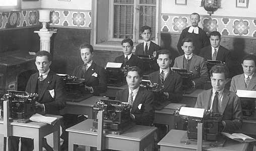
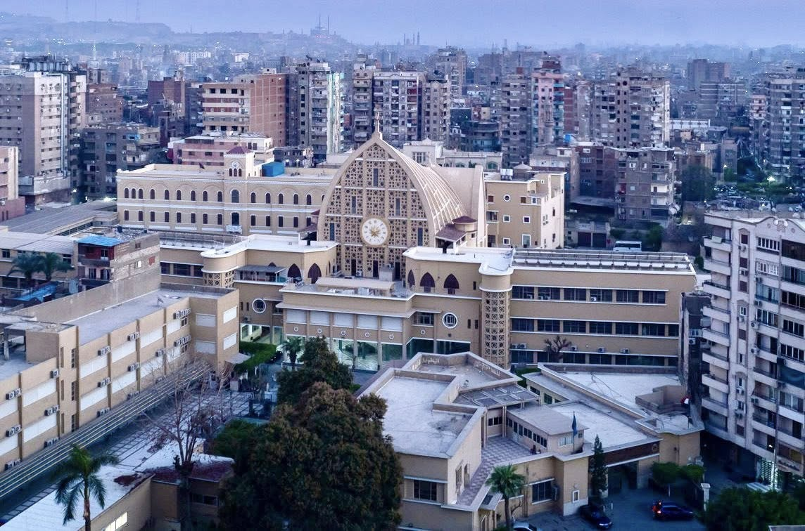
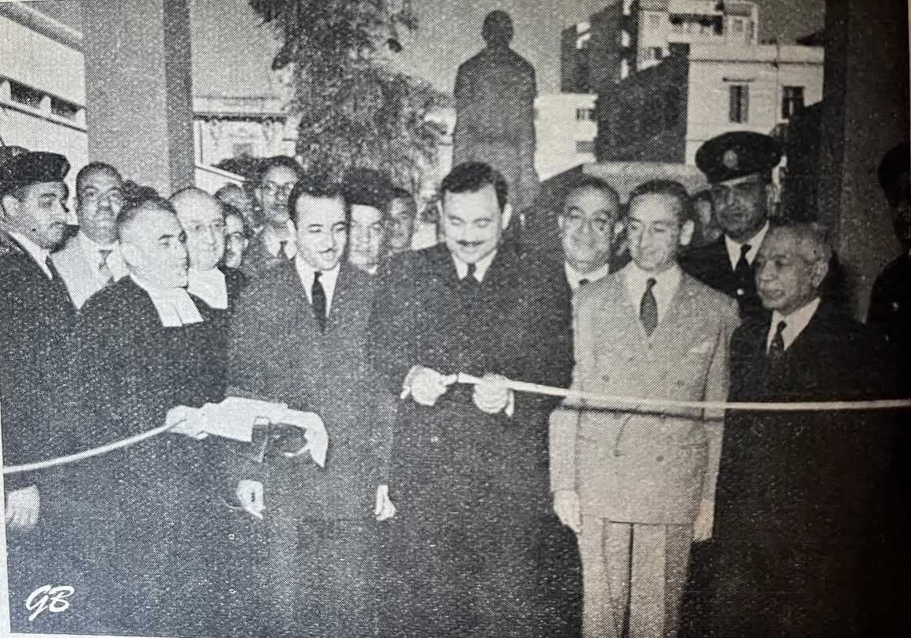
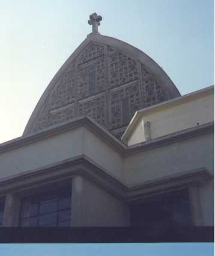
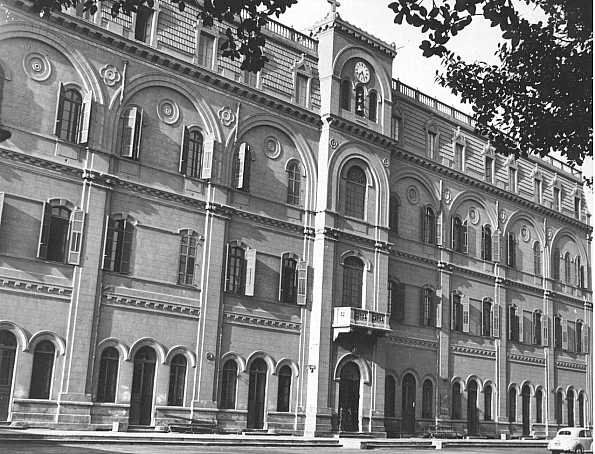
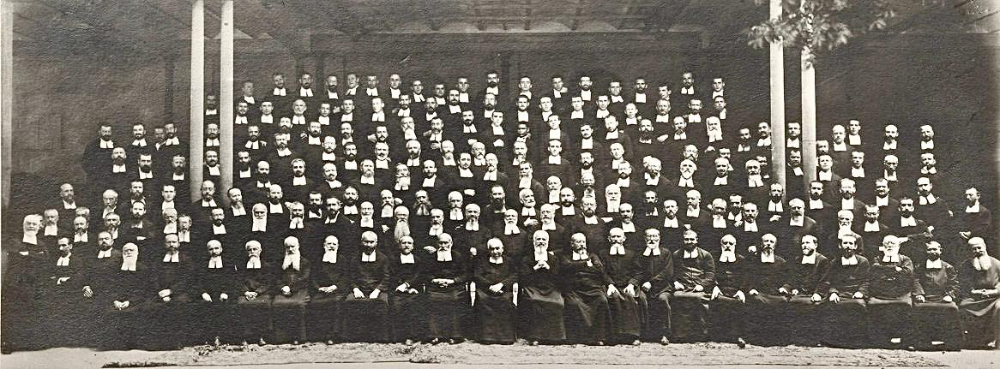

Bac nationale
Programme du ministère égyptien, Thanaweya Amma
- Établissement bilingue, du jardin d’enfants au secondaire
- Français première langue étrangère, sciences enseignées en français
- Anglais deuxième langue étrangère

Du jardin d’enfants à la Terminale, 2 400 élèves préparent la Thanaweya Amma ou le baccalauréat français, dans un même projet éducatif.
Le campus de Daher vu du ciel. Photo : Frères des Écoles chrétiennes, Proche-Orient.
Fondé par les Frères des Écoles chrétiennes, l’institut créé par saint Jean-Baptiste de La Salle, le collège appartient au réseau lasallien d’Égypte et à ses 900 établissements dans le monde.
1898
Les Frères ouvrent le Collège de la Salle dans le quartier de Daher, au Caire.
1905
Inauguration du bâtiment néoclassique en briques rouges, qui reste le visage du collège.

1955
Inaugurés le 26 novembre en présence du ministre égyptien de l’Éducation et de l’ambassadeur de France.

2013
Le 10 janvier, l’AEFE homologue la section française pour la Seconde, la Première et la Terminale.
Les deux filières partagent les mêmes valeurs lasalliennes, la même cour et la même exigence.

Programme du ministère égyptien, Thanaweya Amma
Programmes français, section homologuée par l’AEFE

Élèves, Frères et enseignants se sont réunis pour ouvrir l’année scolaire 2026-2027.

Les familles visitent les classes de Seconde à Terminale et rencontrent l’équipe pédagogique.

Une photographie de groupe retrouvée dans les archives lasalliennes du Proche-Orient.
Les ouvertures d’inscription et la liste des pièces à fournir sont publiées par le secrétariat. Écrivez-nous ou appelez directement le cycle concerné.